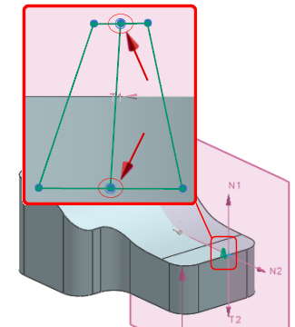
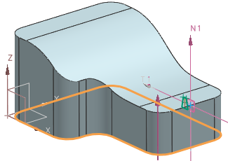
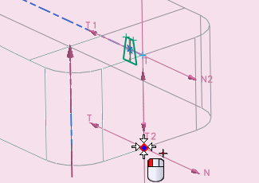
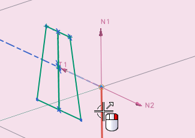

创建草图曲线
-
在草图工具工具条上的约束下拉菜单中，确保已关闭连续自动标注尺寸
 。
。 -
从约束工具下拉菜单中，点击自动判断约束和尺寸
 .
.
-
在自动判断约束和尺寸对话框中，设置如下参数：
要自动判断和应用的约束组中：
-
全部复选框 =

由捕捉点识别的约束组中：
-
点在曲线上 =

-
重合 =
-
中点 =
-
点在线串上 =
-
-
点击确定。
-
使用轮廓
 以及直线
以及直线  命令来创建如图所示的轮廓曲线。
命令来创建如图所示的轮廓曲线。确保在两根水平线的中点上创建中心线。

-
选择插入→来自曲线集的曲线→交点 。
-
在选择条上的曲线规则列表中，选择相切曲线。
-
选择其中一个底边。

所有的底面边都将高亮显示，因为您选择了相切曲线曲线规则，这将允许点跟随整个边。

-
点击直线
。 -
选择底部交点。

-
选择点/路径基准，即参考坐标系原点。

这条直线将总是平行于实体的外部面，它也平行于刀轴，所有的约束都将引用这条直线，以使舌形是一个可加工特征。
-
按 Esc 以退出直线命令。
-
右击直线并选择转换为参考。
